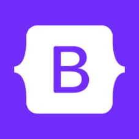
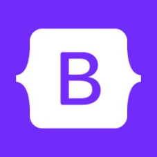
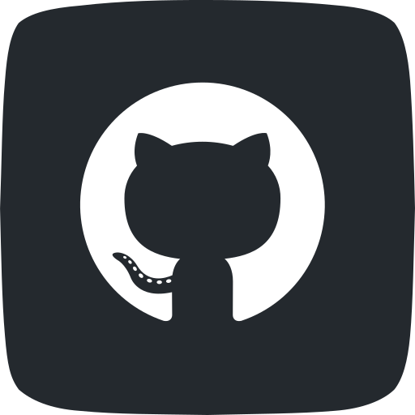
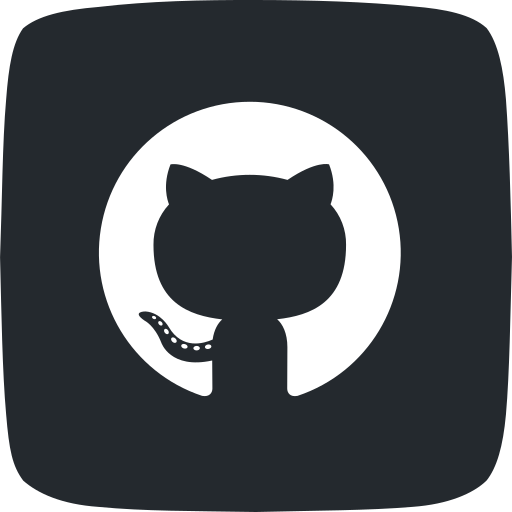

Sobre mi
Cuento con una sólida trayectoria profesional, y en los últimos años he redirigido mi carrera hacia el mundo IT, enfocándome en la programación y el desarrollo web, con especial interés en el Front End. Actualmente me encuentro finalizando la Diplomatura en Programación Web Full Stack en UTN, donde profundizo en tecnologías como HTML5, CSS3, JavaScript y React.js. Este trayecto se complementa con estudios en Testing QA, Análisis de Sistemas, Desarrollo Frontend (Argentina Programa 4.0) y el curso de Programador Web Inicial (UTN), entre otros. Esta formación me permitió adquirir una base técnica sólida y habilidades prácticas que ya estoy aplicando en proyectos personales y colaborativos. Mi experiencia laboral incluye más de 20 años en empresas líderes como Telecom Argentina, AOL y actualmente LN+ (Grupo La Nación), donde me desempeño en el área de soporte técnico. En estos espacios desarrollé competencias clave como resolución de problemas, trabajo en equipo, liderazgo y adaptación al cambio, todas habilidades que considero fundamentales en un entorno de desarrollo ágil.
Portfolio

ESTUDIOS
UTN
- Diplomatura en Programación Web Full Stack (2025)
FrontEnd y BackEnd con conocmiento en HTML, CSS, REACT, JS, SQL.
Udemy & Alumni
- LLM y Chat GPT (2024)
FrontEnd y BackEnd con conocmiento en HTML, CSS, REACT, JS.
- Introduccion a LLM.
- Ingenieria de PROMPTS - Como proguntar a un LLM.
- Chat GPT para analisis y visualizacion dedatos.
- Chat GPT para tareas profesionales de negocios.
- Open AI - API - Uso esencial y conexiones con aplicaciones (PYTHON, EXCEL,...).
EDUCACION IT
- Tester QA, Análisis de sistemas informáticos/Analista (2024)
Conceptos de Calidad - Conceptos y fundamentos de Testing - Tipos y técnicas de pruebas - Conceptos y atributos de Casos de Prueba - Conceptos y atributos de Defectos - Conceptos de Automatización - Test de Perfomance.
- Tecnico Reparador PC (2023)
Fundamentos Básicos - Componentes Básicos - Archivos y Almacenamiento - El Sistema Operativo - Herramientas de Diagnóstico.
Centro de e-Learning UTN FRBA
- Programador Web Inicial - Front End Developer (2023)
Introducción a las tecnologías web Unidad - GIT - HTML - CSS - JS y maquetado avanzado - JS Avanzado - Bootstrap - Aplicaciones web con Node.js - Rutas y controladores - Peticiones, respuestas y templates - Sesiones y middleware - Introducción a las bases de datos - Introducción al lenguaje SQL - Integración de Node.js con Base de datos - CMS y despliegue en Heroku - CRUD.
SKILLS
- Lenguajes, framework, librerias, tecnologias:

 

 
